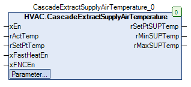

CascadeExtractSupplyAirTemperature (FB)¶
FUNCTION_BLOCK CascadeExtractSupplyAirTemperature
Short Description¶
Formation of a supply air setpoint temperature by means of a cascade controller ( PI controller )Additional functions: Limitation of the supply air setpoint temperatureTypical application: Supply air temperature control in a ventilation system
Portrayal¶

Functional Description¶
General¶
Control¶
Selection of the supply air setpoint temperature¶
xFastHeatEn xFNCEn rActTemp within limit value
xEn Supply air setpoint temperature
Notes
TRUE X X X rMaxSUP Special operating mode ‘Fast heating’
FALSE TRUE X X rMinSUP Special operating mode ‘Free night cooling’
FALSE FALSE FALSE X rSetPtTemp Limit value violation actual temperature
FALSE FALSE X FALSE rSetPtTemp Disabling the regulation
FALSE FALSE TRUE TRUE rSetPtTemp + offset temperature
normal operation
Formation of the current supply air setpoint temperature rSetPtSUPTemp¶
Supply air setpoint temperature
eManModeN rSetPtSUPTemp Notes
X eMANNUM.Auto Supply air setpoint temperature
Manual override module in automatic mode
X eMANNUM.Man rManValue Manual override module in manual mode
Visualization¶
Codesys¶
- InOut:
Scope Name Type Initial Comment Input xEn BOOL Enable / disable the controller ( FALSE = disable, TRUE = enable )
rActTemp REAL 0 Current actual temperature ( exhaust air or room temperature ) in °C ( +5.0 - +50.0 )
rSetPtTemp REAL 21 Current setpoint temperature ( exhaust air or room temperature ) in °C
xFastHeatEn BOOL FALSE Enable / disable rapid heating ( FALSE = disable, TRUE = enable )
xFNCEn BOOL FALSE Enable / Disable free night cooling ( FALSE = Disable, TRUE = Enable )
Output rSetPtSUPTemp REAL Current supply air setpoint temperature in °C
rMinSUPTemp REAL Calculated minimum target supply air temperature in °C
rMaxSUPTemp REAL Calculated maximum supply air setpoint temperature in °C
Input rPI_Tn REAL 600 Reset time of the cascade controller in s
rPI_Kp REAL 1 Amplification factor of the cascade controller
rMaxSUP REAL 26 Absolute maximum supply air setpoint temperature in °C
rMaxRelativeSUP REAL 6 Maximum difference between the room / extract air temperature and the supply air setpoint temperature - Heating mode in K
rMinSUP REAL 16 Absolute minimum supply air setpoint temperature in °C
rMinRelativeSUP REAL -8 Maximum difference between room / extract air temperature and supply air setpoint temperature - Cooling mode in K
tDelayControl TIME TIME#5m0s0ms Start delay of the cascade controller in min
rManValue REAL Output signal of the cascade controller in manual mode in °C
eManModeN eManNum eManNum.Auto Operating mode of manual override for the output signal of the cascade controller